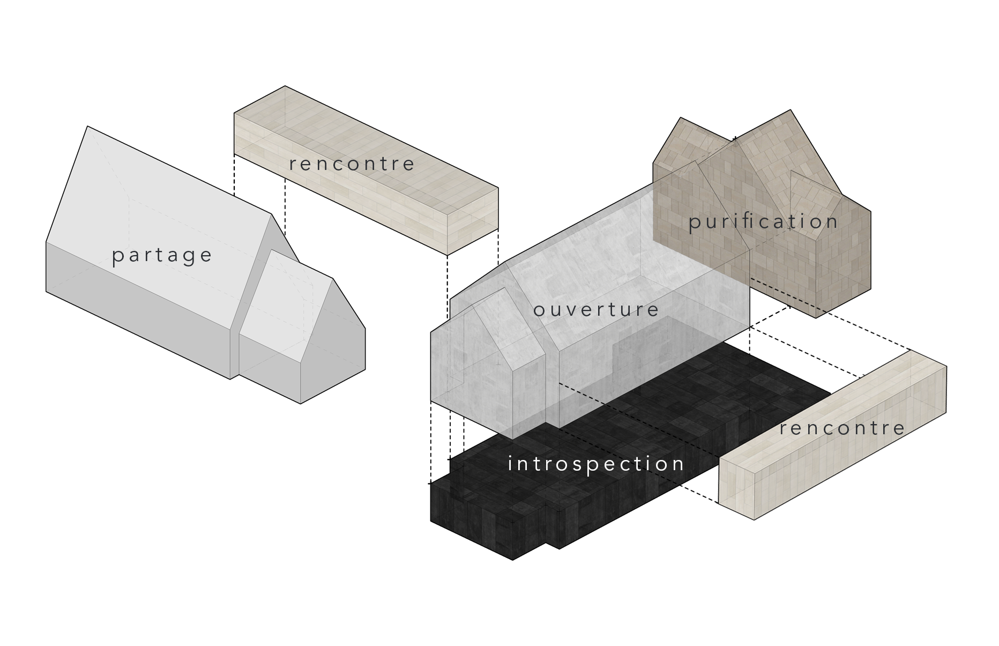

Isometric view of the modified building and site

Perspective section view

Interior perspective - Common hall

Interior perspective - Massage therapy center, basement floor

Site plan + ground floor plan

Program diagram